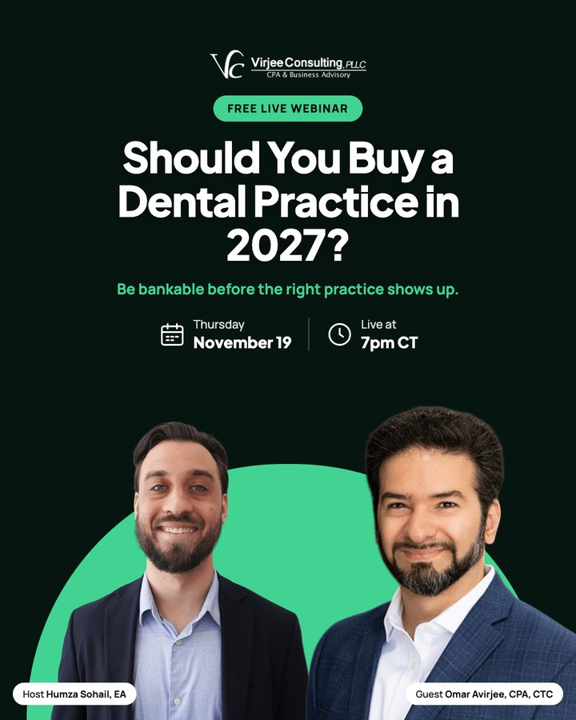
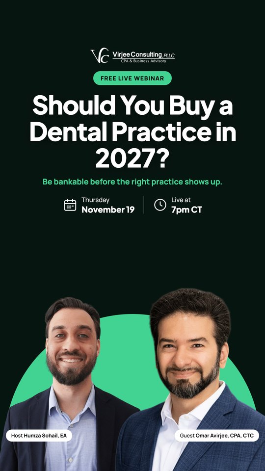

virjeeconsulting Sponsored
Sign up
Two ads for “Should You Buy a Dental Practice in 2027? What the Numbers and Lenders Say”, live Thursday, November 19 at 7pm CT. Each one is shown the way it appears in the Facebook feed and as an Instagram or Facebook story. Please approve each ad or send changes.
For associates and buyers who think a bank’s yes means the deal is safe.
Facebook feed
Instagram and Facebook story
For associates planning to own in the next year or two.
Facebook feed

Instagram and Facebook story
